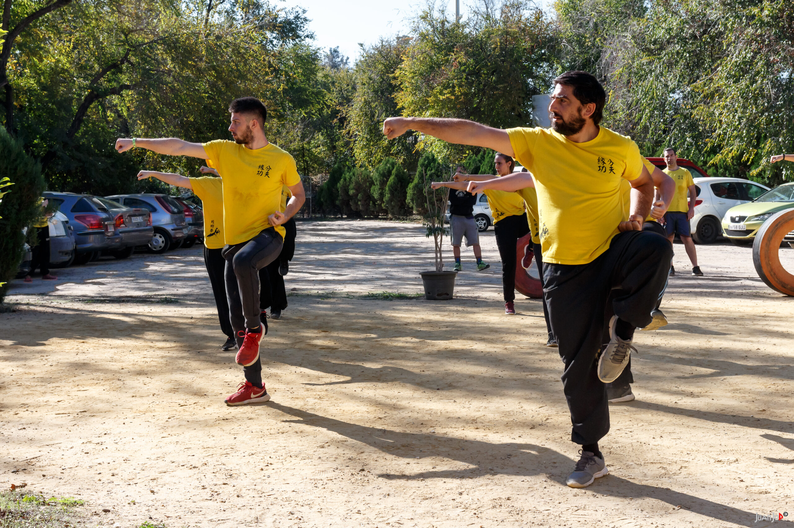
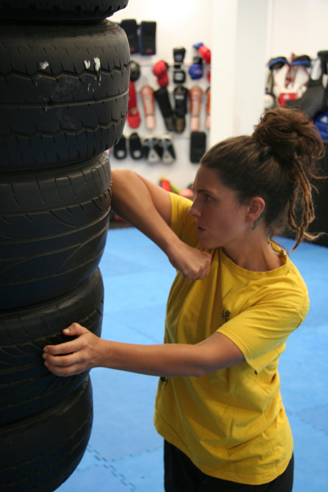
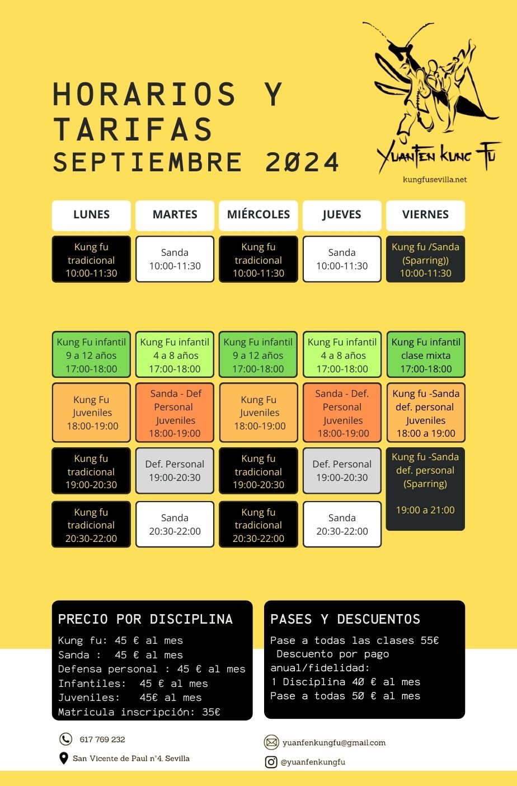

Centro Yuanfen
Kung Fu Sevilla
Descubre el Tesoro de las Artes Marciales Chinas
Autodefensa, Forma Física y Desarrollo Personal
¿Qué es Kung Fu?
Kung-fu, Gongfu o Gung Fu 功夫 (pīn yīn: gōngfu) es un término bastante conocido, empleado de forma general, para referirse a las Artes Marciales provenientes de China. Estas a su vez se dividen en estilos, como por ejemplo estilo Shaolin, estilo Wing Chun, Choy Lee Fat, etc. En nuestro caso, estilo Tang Lang Quan (puño de la mantis religiosa).
Nuestra Escuela utiliza Kung Fu, principalmente por su significado original, que es algo diferente, no necesariamente marcial: se refiere a la perfección en alguna habilidad gracias al trabajo y al tiempo invertido en su desarrollo.

"Las artes marciales chinas no son tan solo un excelente sistema de defensa personal, es un arte completo que mejora notablemente nuestra salud física y mental. Para su aprendizaje solo se requiere una firme voluntad, ya que sus variadas facetas hacen que pueda ser practicado por toda persona sin importar su edad o condición física."
Nuestras Disciplinas
Tenemos una variada oferta de clases y estilos. La mejor manera de saber cuál es la que mejor te viene es simplemente acercarte y conocernos.
Horario y Cuotas
Tablón de Horarios
Actualizado
Tabla completa semanal
Agrupada por día y horario
| Día | Hora | Clase |
|---|
Los horarios pueden variar. Contáctanos para confirmar disponibilidad.
Matrícula y Mensualidades
Puedes elegir especializarte en una sola disciplina o optar por nuestro pase completo, que te da acceso a todas las clases.
Cuota de mantenimiento de 15 € si algún mes no puedes asistir, para no perder plaza ni matrícula. Descuentos por antigüedad y pago anual disponibles.
Condiciones del descuento y mantenimiento
Adultos
A partir de su inscripción, deberán asistir o abonar de continuo todos los meses del curso (12 meses).
La mensualidad de agosto se reduce 10 €, debido a que, en dicho mes, la escuela cierra 15 días por descanso estival.
Infantiles
A partir de su inscripción, deberán asistir o abonar de continuo todos los meses del curso (11 meses; en agosto no hay clases de nivel infantil).
Durante el mes de julio las clases serán dos veces en semana en lugar de tres, por tanto, la mensualidad se reduce 10 €.
Otras condiciones
- Si por motivos ajenos a la escuela, algún mes no puede asistir a clase, se abonará una cuota de mantenimiento de 15 € para no perder plaza ni matrícula.
- Las ausencias mayores a un mes, sin pago de la cuota de mantenimiento ni comunicación previa, causarán la baja automática de la matrícula, que deberá ser abonada al momento de reincorporarse a las clases.
- El descuento por antigüedad es de 5 € mensuales.
Más Información
Tablón de Noticias
Mantente al día con nuestras actividades, eventos, fotos y noticias recientes desde redes sociales.
Publicaciones recientes
Si más adelante añades Instagram en la configuración, podemos enlazarlo también en las tarjetas del tablón.
Contacto
¿Buscas una escuela de kung fu en Sevilla o quieres probar una clase en Triana? Escríbenos y te responderemos lo antes posible.